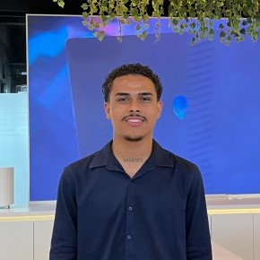

Diógenes Moreira
Desenvolvedor Front-end
Sou desenvolvedor front-end com base em HTML, CSS e JavaScript, criando interfaces responsivas e funcionais. Meus projetos também incluem Node.js, orientação a objetos, persistência de dados e Bootstrap, além de experiência com Git, GitHub e suporte técnico em TI.
Front-end
- HTML
- CSS
- JavaScript
- Bootstrap
- Design responsivo
Desenvolvimento
- Node.js
- POO
- Git & GitHub
- Persistência de dados